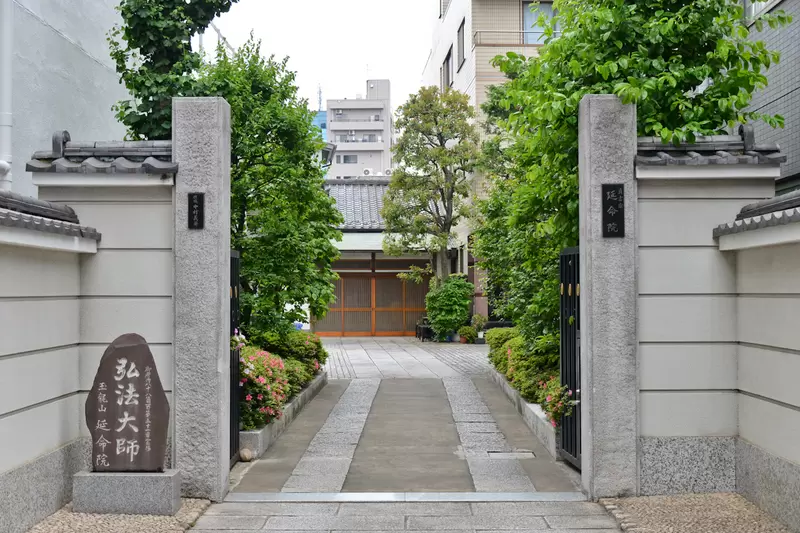
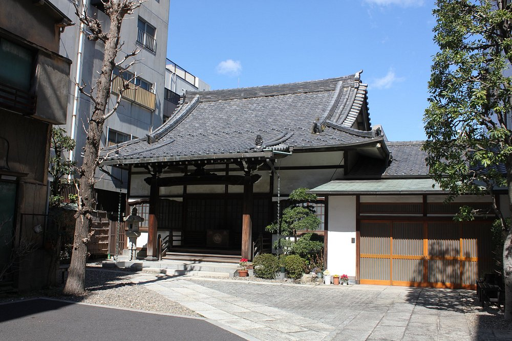
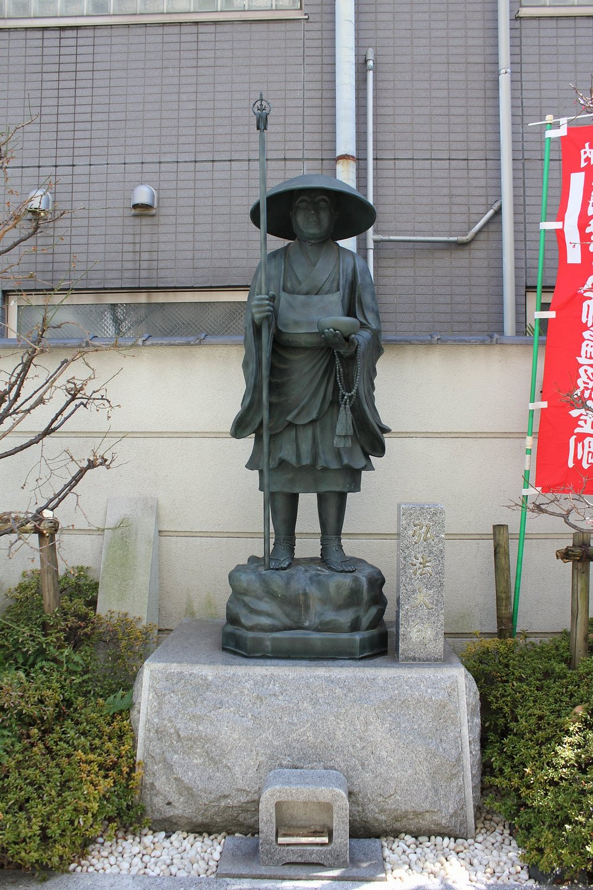
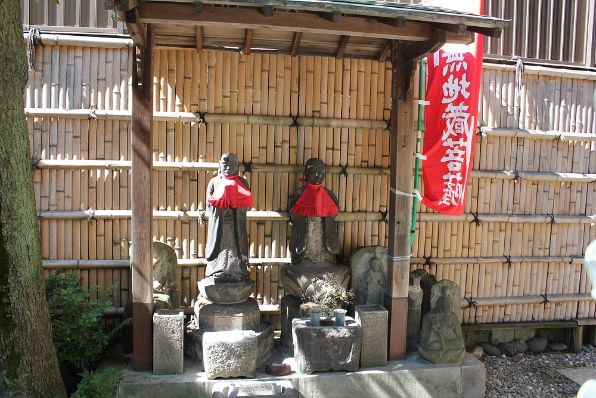
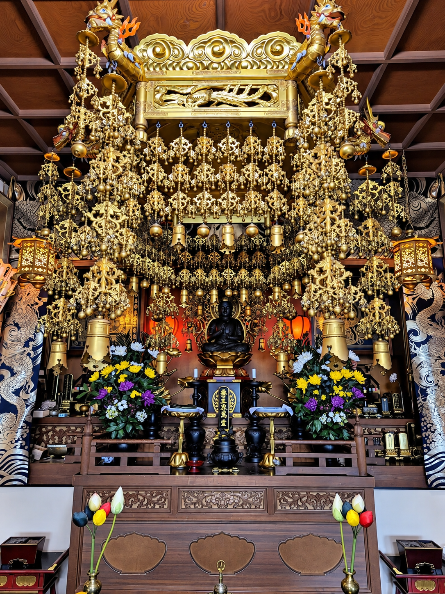
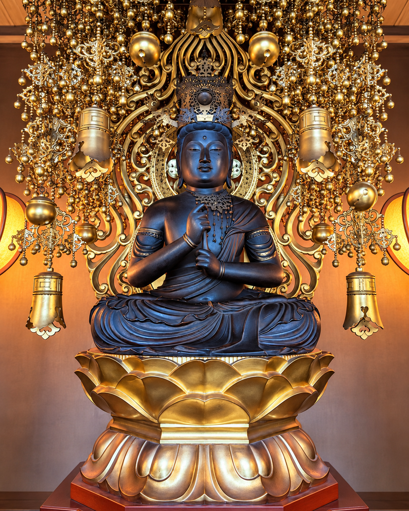

元浅草のまちにある、
真言宗智山派の寺院。
延命院は、東京都台東区元浅草にある真言宗智山派の寺院です。山号を玉龍山、寺号を弘憲寺、院号を延命院と称し、御本尊に大日如来をお祀りしています。
また、御府内八十八ヶ所霊場第五十一番札所となっています。
- 正式名称
- 玉龍山弘憲寺延命院
- 宗派
- 真言宗智山派
- 御本尊
- 大日如来
- 参拝時間
- 通常 7:00〜17:00
- 札所
- 御府内八十八ヶ所霊場
第五十一番札所
真言宗智山派 玉龍山弘憲寺
参拝時間 7:00〜17:00通常の参拝時間です

ABOUT
延命院は、東京都台東区元浅草にある真言宗智山派の寺院です。山号を玉龍山、寺号を弘憲寺、院号を延命院と称し、御本尊に大日如来をお祀りしています。
また、御府内八十八ヶ所霊場第五十一番札所となっています。
HISTORY
延命院の開創は、室町時代にさかのぼるとされています。
寺の始まりについては、讃岐から武蔵へ赴いた僧が、矢ノ倉（現在の東京都中央区東日本橋付近）に一寺を開いたことが起源とされています。当初は「延寿院」と称していたとされ、江戸時代には二代将軍・徳川秀忠の命により「延命院」へ改称したと伝えられています。
明暦三年（1657）の大火後、寺地を現在の元浅草へ移したとされます。現在は御府内八十八ヶ所霊場第五十一番札所となっています。
現在の東日本橋付近にあたる矢ノ倉で寺が開かれたことが、延命院の始まりとされています。
旧称「延寿院」から「延命院」への改称は、徳川秀忠の命によるものと伝えられています。
明暦三年（1657）の大火を経て、現在の元浅草へ寺地を移したとされています。
開創の経緯や改称に関する記述には伝承を含みます。創建年については資料によって記述が異なるため、本ページでは「室町時代」と表記しています。
TEMPLE GROUNDS



MAIN HALL
本堂には御本尊・大日如来をお祀りしています。本堂内陣と御本尊のお姿を写真でご紹介します。


VISIT
通常の参拝時間
〜御朱印の授与時間は、参拝時間と異なる場合があります。事前にお問い合わせください。
通常の参拝時間は7:00〜17:00です。時間外にお参りをご希望の場合は、事前にお問い合わせください。
御府内八十八ヶ所霊場の巡礼や御朱印をご希望の方は、対応可能な日時を事前にお電話でご確認ください。
SEASONS
春秋のお彼岸やお盆など、季節の節目にもどうぞお参りください。
ご先祖を偲び、静かに手を合わせる季節です。
ご先祖を迎え、感謝の心を向ける時期です。
秋の彼岸に、ご先祖や故人を偲びます。
QUESTIONS
通常は7:00〜17:00です。御朱印の授与時間は参拝時間と異なる場合がありますので、事前にお問い合わせください。
御朱印の授与については、対応可能な日時を事前にお電話でご確認ください。
駐車については事前にお問い合わせください。公共交通機関では、稲荷町駅・新御徒町駅・田原町駅をご利用いただけます。
ACCESS
所在地
〒111-0041
徒歩時間は目安です。ご利用の出口や経路によって異なります。
Google マップで場所を見る （新しいタブで開きます）地図が表示されない場合は、上のGoogle マップのリンクをご利用ください。
CONTACT
寺院やご参拝、御朱印などについてのお問い合わせは、下記よりご連絡ください。